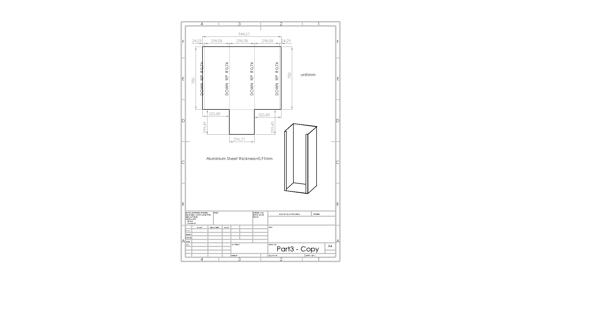

Welcome to the Test Methodology page! This page contains some information about the testing phase of the prototypes.
Overview
All prototypes of the solutions(both electrical and mechanical) must go through at least two phases of testing: small-scale test and full-scale test. For small-scale test, a cup of moist soil is enough to illustrate whether the solution is physically feasible. For full-scale test, a test rig must be designed and fabricated to simulate the real farming field environment so that the verification process of the full-scale prototypes can be conducted.
Design requirements
The test rig must be:
1. Similar to the real farming situation
2. Strong enough to hold the soil up to 50cm deep and leak proof
3. Transparent at least one side to enable wetting front observation
4. Possible to fabricate in Dyson centre
Test rig design iterations
The figure below shows the first design: A 70cm long, 20cm in diameter,3mm thick, clear acrylic cylinder with a square base.
The main advantage of this design is that the wetting front can be observed 360 degree around the cylinder. However, fabrication of this rig is going to be very expensive(~£70), and hot rolling acrylic sheet is not feasible in Dyson centre.
As a result, another test rig is designed to address these issues. The next three figures show the improved design and the final test rig I fabricated: A 75cm long, 30cm x 30cm aluminium box with one clear side made from acrylic. The base of the box is riveted to the sides rather than welded for three reasons: ease of assembly, time-saving and avoiding weld distortion. The acrylic side is glued to the aluminium because other fasteners(e.g. rivets, nuts and bolts) are very like to crack the acrylic sheet. After assembling, Silicone is carefully applied to all the gaps and seams to ensure that the box is perfectly leak proof.

Validation
The test rig box is validated during the parallel test between the touchy bottle and the full-scale eletrical wetting front detector. All design requirements of the test rig are successfully met.


Limitations
During the parallel test between the touchy bottle and the electrical wetting front detector, it was noticed that the wetting front was very
non-uniform even for an irrigation area of just 30cm squared. The wetting front at the acrylic side only reached 3cm depth when the wetting front at the centre of the box reached more than 6cm depth.
Therefore, it was very hard to directly compare the performance of these two prototypes.
However, this experiment was still meaningful. It implied that the wetting front in real fields might be even more